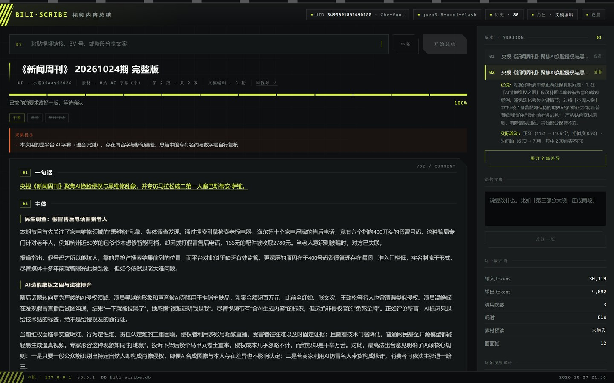
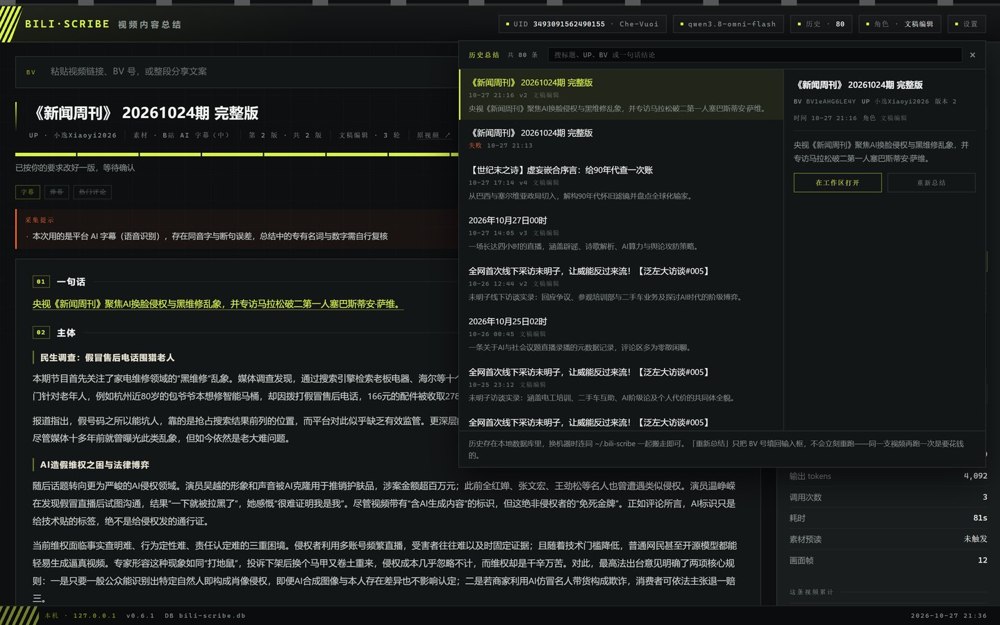
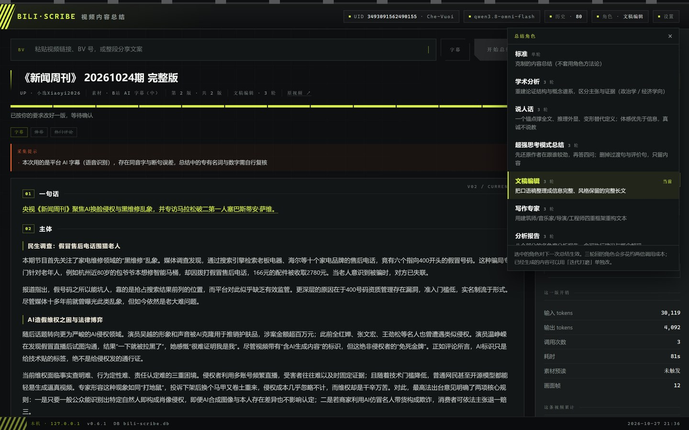
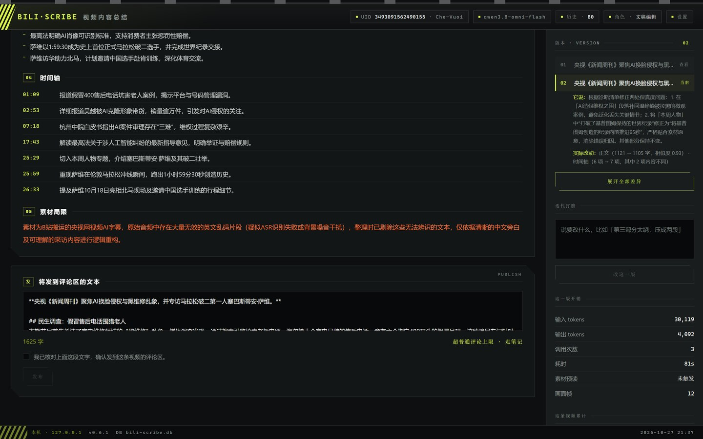
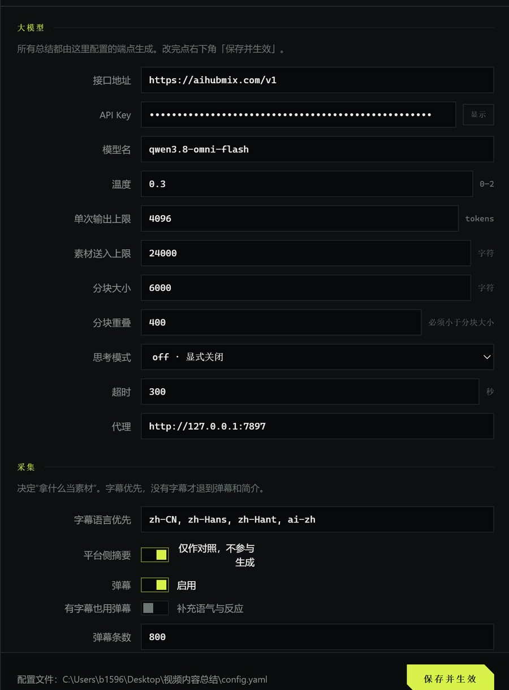
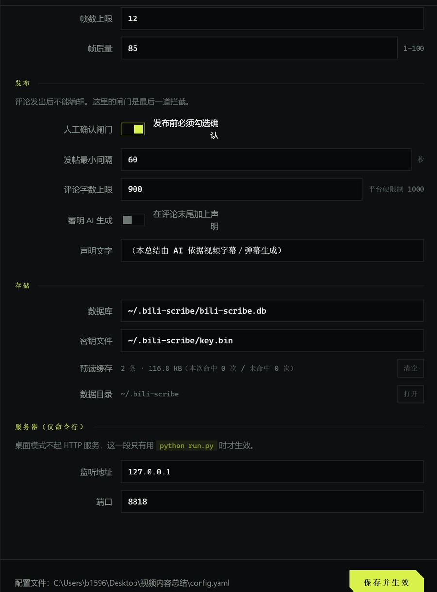

视频内容总结 BILI·SCRIBE / 把一条几小时的视频读成一篇能发出去的文字
给它一条 B 站视频链接，它把字幕、画面和元信息读一遍，写成一份可核对、可修改、可撤回的总结，发到那条视频的评论区。
- 01廖黎倩
- 02曹晶
- 03李政霖
- 04林晨
- 05李乐彤
- 06尚宇硕
- 07熊波
- 08邓光莹
- 09刘怡
- 10刘雨迪
本项目实现了一个本地的视频内容总结工具：给一条 B 站视频链接，程序自动完成素材采集 → 大模型总结 → 人工预览确认 → 发布评论四段流程，并在发布前留出一道必须由人勾选的闸门。它要解决的不是"能不能总结"，而是三个更麻烦的问题：几小时的视频塞不进一次上下文、模型一次成稿必然有幻觉和失真、生成完就不能再改，人只能全部重来。
针对这三点，系统设计了 分段预读 + 归约生成 的两段式流水线（MAP-REDUCE 的文本变体）、角色系统 + 三轮回自省（生成 → 自我批判 → 按诊断修订）、以及 版本史 + 字段级 diff（把"重来"变成"改一句"）。画面信息用等距抽帧，只送进归约那一次调用，因此只付一次钱。
系统实测运行 39 天，累计处理 80 条任务 / 36 个不同视频，产生 65 个总结版本、37 条已发布评论，累计消耗 3,832,455 tokens（305 次调用）。测试体系共 256 项断言（离线 39 + HTTP 46 + 前端 171），全部通过。
系统设计
分层、流水线、数据模型，以及每一处选择背后的理由。2.1 总体流水线
整条链路五个阶段，其中 第 4 阶段是人为闸门，其余四段自动。第 5 阶段之后有一条回边——不满意就回到第 3 阶段，但复用同一份素材笔记，不再重新采集、不再重新预读。
2.2 代码分层
三层加一个前端，依赖方向单一，不允许下层反向依赖：
| 层 | 文件 | 行数 | 职责 |
|---|---|---|---|
| app | service.py | 1,471 | 业务编排：建任务、跑后台线程、迭代打磨、发布 |
| app | main.py | 280 | HTTP 路由（FastAPI），只做参数校验与转发 |
| app | static/index.html | 2,860 | 单文件前端，无构建、无框架、无 node_modules |
| core | summarizer.py | 637 | 分块、预读、归约、修订、diff |
| core | roles.py | 666 | 8 套角色方法论 + 输出契约 |
| core | collector.py | 590 | 字幕 / 弹幕 / 标签 / 简介的采集与降级 |
| core | frames.py | 480 | 抽帧、裁单格、独占缓存与过期清理 |
| core | composer.py | 192 | 总结 → 评论文本 / 长文 / Delta |
| core | publisher.py | 384 | 发布、撤回、超限降级 |
| core | srt.py / resolver.py | 330 | 本地字幕解析、链接与 BV 号归一 |
| infra | store.py | 599 | SQLite：任务、版本史、发布记录、凭证 |
| infra | llm.py | 476 | OpenAI 兼容客户端、重试、用量统计 |
| infra | bili_client.py | 340 | 接口封装、WBI 签名、错误码归一 |
| infra | notecache.py | 226 | 笔记内存缓存（可丢，丢了重算） |
| — | desktop.py | 776 | pywebview 外壳、单实例、日志接管 |
源码合计 11,070 行；另有测试 4,970 行（smoke_test.py 3,541 + frontend_test.js 1,429）。
2.3 数据模型
五张表。设计上最关键的一条判断是：什么能重建、什么不能——能重建的放内存，不能重建的必须落库。
kv 键值对（界面偏好等琐碎状态） credential 单行表，账号凭证 BLOB 加密存储，密钥单独放 key.bin task 一次总结任务：原始输入、BV、标题、素材类型与可信度、结构化结果 publish 一次发布尝试：rpid、状态（published / blocked）、撤回时间 summary_version 版本史：source(initial|refine|restore)、requirement、metrics
素材笔记丢了可以重算（只是贵一点）；但一段已经生成、已经被人逐条改过的文字，重跑模型不会给出同一个结果——那是丢劳动，不是丢缓存。所以笔记留在内存（72 小时），版本史和发布记录落库。这条判断直接写在 store.py 的建表注释里。
关键实现
七处真正花了时间的算法与取舍。每一处都先说"为什么不能这么做"。3.1 素材采集：一条有优先级的降级链 collector.py
总结的质量上限由素材决定，所以采集不是"抓到什么算什么"，而是一条明确排序的链：
| 优先级 | 素材 | 可信度 | 为什么在这个位置 |
|---|---|---|---|
| 1 | 人上传的字幕 / SRT | 高 | 有人校对过，标点与断句正确 |
| 2 | UP 主上传字幕 | 高 | 作者本人确认过 |
| 3 | 平台 AI 字幕 | 中 | 有语音识别错误，必须在局限段落声明 |
| 4 | 弹幕 + 简介 + 标签 | 低 | 没有完整句子，只能当补充气氛与反应 |
选中的素材类型会一路传到最后——不是为了展示，而是因为它要写进"素材局限"那一段。用 AI 字幕生成时，模型被明确要求指出"存在语音识别错误，人名地名可能有音译偏差"。这就是前面说的"敢公开"的代价：得先承认自己站得不稳。
3.2 长文本分块：一个被忽略的边界 summarizer._split()
最直觉的分块写法是按 size − overlap 逐步长推进。它有一个不起眼但必然发生的缺陷：当素材长度不是步长的整数倍时，末尾会多出一个很短的残块，而分块数有硬上限（MAX_CHUNKS = 8），多出来的那一块会把前面挤掉。
这里改成先反推步长下限，再定窗口宽度：K 个窗口要覆盖 N 个字符，步长至少是 (N−1)/(K−1)；窗口宽度取「步长 + overlap」，于是既保住块间重叠，又不会因为末尾残段多切一块。
minimum_step = ceil((length - 1) / (max_chunks - 1)) step = max(1, minimum_step, size - max(0, overlap)) window = step + max(0, overlap)
把函数直接跑一遍，五种长度下的实测输出：
| 输入字符数 | 块数 | 各块长度 | 读出来的东西 |
|---|---|---|---|
| 5,000 | 1 | [5000] | 不超限，不切 |
| 12,000 | 3 | [6000, 6000, 800] | 短素材走原尺寸，末块是自然余量 |
| 24,000 | 5 | [6000×4, 1600] | 刚好在 max_input_chars 边界 |
| 40,918 | 7 | [6246×6, 5842] | 末块 5,842 字符，不是残句 |
| 60,000 | 7 | [8972×6, 8568] | 块变宽而不再变多，被上限锁住 |
关键在第 4、5 行：按传统写法，40,918 字符会切成 8 块且最后一块只有几百字符——等于让模型为一段残句付一次完整调用；超过 6 万字时块数还会继续涨，撞上 MAX_CHUNKS 就把前面的块挤掉。现在块数被锁住，多出来的长度摊到每块的宽度上。
3.3 两段式生成：预读与归约的分工
一次调用塞不下四小时的字幕，所以拆成两步。第一步 MAP：对每一块抽"这一段讲了什么"的结构化笔记；第二步 REDUCE：把所有笔记合成一篇结构化的总结 JSON。
预读的提示词里有一句关键约束：「笔记要能让人仅凭它还原这段内容，不要压缩成一堆语义模糊的关键词」。这带来一个反直觉的结果——压缩比只有 38%–55%，笔记几乎和素材一样长。
这是刻意的：省在预读上没有意义，因为真正被反复使用的是笔记，而不是素材。笔记保真，后面三轮自省和多次迭代才有正确的原料；笔记压得太狠，每一轮都在失真的基础上继续失真。
这次实测的《新闻周刊》时长 43:50，平台 AI 字幕原始 915 条、聚合为 150 段，聚合后的长度没有超过 max_input_chars = 24000，所以 chunks = 1，素材一次直送归约，不触发预读——界面上"素材预读"一行显示未触发。同一套代码在长素材上会自动走预读，两条路径都在实际使用。
3.4 三轮回自省：把"一次成稿"变成"能收敛的过程"
角色 wengao（文稿编辑）不是一次调用，而是三轮：生成 → 自我批判 → 按诊断修订。批判那一轮输出的不是散文，是一份结构化诊断清单（哪一句失真、哪一处删了不该删的、哪一段口径跑偏）；修订那一轮拿这份清单去改，并被要求只改该改的地方。
这个结构带来两个可以直接量化的好处：改动可解释（诊断清单本身就是改动理由）、改动可度量（系统算出字段级相似度）。第 5.3 节会用一次真实迭代把这两点摊开看。
判断"要不要预读"不能看素材长度。笔记本身也可能超限——一条 4 小时视频的笔记约 19,772 字符，而 max_input_chars 是 24,000，只差一点；素材再长一些，笔记就会被当成"新素材"又预读一遍。那是二次压缩，信息在没人察觉的情况下再掉一层，成本还翻倍。所以判据改成只认「有没有传 prepared」，不看长度。
3.5 画面抽帧：只为一次调用付费
字幕抓不到 PPT、图表、屏幕上的字。所以系统会等距抽帧（默认上限 12 张）。这里有一个必须先解决的两难：接口返回的是 10×10 网格拼图，整张交上去，不缩就 15.2 MB 发不出去，缩到能发出去单格只剩 160×90——画面上的字就糊了，而字正是加画面的全部价值。
解法是裁单格：体积只有整张的约 1/88，分辨率还是原生的 480×270。两条路都量过，成本差十倍：
| 方案 | 12 帧的 image_tokens | 相对一条 4 小时视频的总输入（86,428） | 结论 |
|---|---|---|---|
| 整张拼图 | 14,688 | +17.0% | 单格缩到 160×90，字读不出来 |
| 裁单格（采用） | 1,464 | +1.7% | 原生 480×270，字可读 |
第二个取舍在于送在哪一步。如果帧进入预读或三轮回，同一批图会被反复送好几遍（预读最多 7 次、三轮回再 2 次）；而归约是唯一"把全部素材合起来看一遍"的调用，画面在那里最有价值，也只需要付一次钱。本次案例只有 1 块、没有预读，12 帧的 1,464 image_tokens 占 v1 输入 26,874 的 5.4%——短视频里画面反而更贵，因为没有预读来摊薄。
3.7 发布闸门：最后一道人力拦截
评论一旦发出去，改不了。所以发布这一步有三重约束同时成立才允许点击：
- 必须有内容：文本框非空。
- 必须人手勾选：勾选框是硬闸门，配置里可以关，但默认开。
- 必须是当前版本：正在回看第 1 版时，整个发布区会收起——否则会出现"预览里是第 1 版、发布框里是第 2 版"这种最危险的组合。
另外两道保护：评论超过字数上限时自动降级走"笔记通道"（发一条动态指向视频）；发帖间隔有最小值，防止连续操作被判为机器行为。已发布的总结会自动关闭打磨入口——撤回前不能再改。
功能展示
以下全部是程序真实运行界面的截图，不是设计稿。截图里的任务就是第 5 章要拆解的那一条。
一句话 / 主体 / 要点 / 时间轴 / 素材局限 分块。右栏是版本面板。
图 2版本面板特写。上半是模型自己写的修订说明（「它说」）；下半是系统算出来的实际改动：正文 1121 → 1105 字，相似度 0.93 · 时间轴 6 项 → 7 项，其中 2 项内容不同；再下面是迭代打磨输入框与「改这一版」，以及这一版的开销（输入 30,119 / 输出 4,092 / 调用 3 次 / 耗时 81 s / 素材预读未触发 / 画面帧 12）。
「它说」和「实际改动」必须放在一起看。模型的自我描述也是会失真的：一句"已按要求修订"可能什么都没改，也可能改坏了别的地方。所以每一版都附带一个可计算的指标去校验它，人只需要看数字对不对得上，不用重读全文。
这一栏在本次案例里就抓到了实情：模型说它改了两处保真度问题，而 diff 显示只有正文和时间轴两个字段动过，一句话、要点、短版逐字节没变——正是"只改该改的地方"应有的样子。
其余六个界面按资源库索引页的单元格结构逐个铺开——每一格是「一张真截图在上、一条白底说明条在下」，与参考站点里「缩略图 + 文件名条」的卡片同构。这里不并排缩成两列，因为 1440×900 的界面截图缩到半宽后格内文字就读不出来了，而这些字正是报告的证据：





验证与实测
这一节所有数字都来自实跑与本地数据库查询，没有估算。5.1 测试体系
三套测试跑在不同层面，任何一次改动都要三套全过：
| 套件 | 文件 | 行数 | 断言 | 覆盖什么 |
|---|---|---|---|---|
| 离线 | smoke_test.py | 3,541 | 39 / 39 | 纯函数与流水线：分块、JSON 修复、diff、合并、降级 |
| HTTP | smoke_test.py | 同上 | 46 / 46 | 真实 FastAPI 应用：路由、状态码、版本冲突、闸门 |
| 前端 | frontend_test.js | 1,429 | 171 / 171 | jsdom 渲染、交互、对比度、禁用态 |
实跑输出：离线 39/39 通过，HTTP 46/46 通过 · 前端测试：171 通过 / 0 失败 / 共 171 项。前端测试里有一组专门算颜色对比度的用例（"最弱一档文字对比度 ≥ 3"），是因为曾经把辅助信息调到 2.39:1 导致读不出来，改到 4.08:1 后才过的——可读性被写成了断言，而不是靠自觉。
5.2 真实运行统计
从本地数据库直接统计（2026-09-19 13:55 至 2026-10-27 21:16，39 天）：
| 指标 | 值 | 说明 |
|---|---|---|
| 任务总数 | 80 | 其中成功 64、失败 16（失败率 20.0%） |
| 不同视频 | 36 | 平均每个视频被总结 2.2 次（同一视频反复磨） |
| 素材来源分布 | 47 / 21 / 7 / 4 | AI 字幕 / 人上传 / 仅元信息 / 弹幕 |
| 总结版本 | 65 | 61 版为文稿编辑，其余为其他角色 |
| 发布记录 | 38 | 已发布 37 / 被拦截 1，无一条误发或事后撤回 |
| 累计 tokens | 3,832,455 | 输入 3,332,890 + 输出 499,565 |
| 单次耗时 | 109.5 s | 中位数；最快 37.4 s，最慢 457.2 s（n=61） |
16 次失败主要是三类：（1）评论发送被平台限制（评论区关闭 12002 / 12052、账号状态 -102，均设计为硬停不重试）；（2）字幕缺失且未开弹幕兜底；（3）网络或代理瞬断。这三类都是外部条件问题，不是算法问题，且失败全部留痕在历史列表里（图 3 可见），用户能看见失败原因并重试。
5.3 一次完整生命周期：从一条链接到第 2 版
下面这条是本次实测案例，全部数字取自本地库与界面：
| 字段 | 值 |
|---|---|
| 视频 | 《新闻周刊》20261024期 完整版 · BV1eAHG6LE4Y |
| UP 主 / 时长 | 小逸Xiaoyi2026 · 43:50 · 未分区 · 第 1/1 P |
| 素材 | B 站 AI 字幕（可信度：中）· 原始 915 条 → 聚合 150 段 |
| 提示 | 「本次用的是平台 AI 字幕（语音识别），存在同音字与断句误差，总结中的专有名词与数字需自行复核」 |
| 规模 | 分块 1（未触发预读）· 画面帧 12 · 角色 文稿编辑（三轮回） |
| 产出 | 正文 1,105 字符 · 要点 5 条 · 时间轴 7 条 · 短评论 287 字符 · 发布正文 1,625 字符 |
两版的开销与结果：
| 版本 | 来源 | 调用 | 输入 tokens | 输出 tokens | 耗时 | 正文字数 |
|---|---|---|---|---|---|---|
| v1 | initial | 3 | 26,874 | 3,859 | 107.3 s | 1121 |
| v2 | refine | 3 | 30,119 | 4,092 | 81.0 s | 1105 |
| 合计 | — | 6 | 56,993 | 7,951 | 188.3 s | — |
第二版是被这句话改出来的（用户原话，103 个汉字）：
「第二个小标题「AI造假维权之困与法律博弈」现在有三段，读起来太密。把这段压成两段，法律条文那半段只留最高法的两条明确规则（可识别标准、惩罚性赔偿），其余展开删掉。另外时间轴现在只有六条，从 25:29 直接跳到 26:33，补一条萨维在伦敦马拉松破二的那个瞬间。」
这句话提了两个可核对的要求，两个都做到了，而且只有被点名的部分动了：
| 小节 | v1 段落数 | v2 段落数 | v1 字符 | v2 字符 | 是否被要求改 |
|---|---|---|---|---|---|
| 民生调查：假冒售后电话围猎老人 | 2 | 2 | 281 | 281 | 没提 → 一字未动 |
| AI 造假维权之困与法律博弈 | 3 | 2 | 462 | 443 | 要求「压成两段」→ 真压成两段 |
| 本周人物：不止 1 小时 59 分 30 秒 | 3 | 3 | 376 | 379 | 没提 → 只差 3 个字符 |
时间轴那条要求也对上了：新增 25:59「重现萨维在伦敦马拉松冲线瞬间，跑出 1 小时 59 分 30 秒创造历史」，正好补在 25:29 与 26:33 之间；其余六条逐字未变。
系统的字段级 diff 只报了两个字段变化（与图 2 界面上的数字完全一致）：
// 程序自己的 diff_fields() 输出，非人工整理 正文 1121 → 1105 字 相似度 0.93 时间轴 6 项 → 7 项 其中 2 项内容不同 // 一句话 36 字、要点 5 项、短版 287 字符 —— 完全未变，因此不进列表
这里有个值得单独说的细节：界面报"2 项内容不同"，但逐条比对会发现真正新增的只有 25:59 一条，其余六条一字未改。原因是 diff_fields 对列表按位置配对（zip）——插入一条后，第 6 位从 26:33 变成 25:59，于是被计为"不同"。程序如实报出了它能算出的东西，而没有假装自己知道语义：它只报客观事实（哪个字段变了、变了多少、举一个例子），至于"这算不算顺手改的"，留给看的人判断。
最后是模型自己的修订说明（「它说」），可以拿去和上面的 diff 对照：
「根据诊断清单修正两处保真度问题：1. 在「AI造假维权之困」段落补回温峥嵘被拉黑的微观案例，避免泛化丢失关键情节；2. 将「本周人物」中"打破了基普图姆保持的世界纪录"修正为"将基普图姆创造的纪录向前推进 65 秒"，严格贴合素材原意，消除错误归因。其他部分保持不变。」
它说了两件事，diff 说了一件事，段落统计说了另一件事。三者对上之后才能确认：要求的两个动作都做了，没要求的地方没被顺手改坏。这正是把"自述"和"可计算指标"并排放的意义。
5.4 两条路径的成本解剖
同一套代码在实际使用中走了两条路，成本结构完全不同：
| 路径 | 触发条件 | 一次生成的输入 tokens | 调用次数 | 成本大头在哪 |
|---|---|---|---|---|
| 短视频（本次案例） | 聚合素材 ≤ 24,000 字符，chunks = 1 | 26,874 | 3 | 三轮回把同一份素材送了三遍 |
| 长视频（4 小时直播） | 素材 40,918 字符，切 7 块走预读 | 86,428 | 10 | 预读 38% + 三轮回 62% |
把长视频那 86,428 拆开看，结论很直接：
| 环节 | 输入内容 | 输入 tokens | 占比 |
|---|---|---|---|
| 7 段预读 | 43,318 字符素材 + 1,365 字符提示开销 | 32,663 | 38% |
| 归约 | system 1,456 + 模板 687 + 笔记 19,772 + 12 帧 1,464 | 17,484 | 20% |
| 自我批判 | system 219 + 笔记 19,772 + draft 4,513 | 17,928 | 21% |
| 修订 | system 1,456 + 修订指令 137 + 诊断 1,200 + 笔记 + draft | 19,817 | 23% |
| 合计 | 对照：单轮角色只需 47,845 | 86,428 | 100% |
成本大头是"三轮回把同一份笔记送了三遍"（62%），不是预读（38%）。所以想砍成本的杠杆在轮数，不在分块——这条结论后来直接决定了"标准角色单轮"这个选项的存在意义。
迭代的增量也是量出来的：v2 输入 30,119 比 v1 的 26,874 多 3,245（+12.1%），多出来的部分是"上一版全文 + 这次的要求"，而素材笔记没有重算。换句话说，改一次的钱约等于重新生成一次的 1.12 倍，而不是两倍。
结论
这个项目最终证明了什么。一个"AI 总结视频"的 demo 可以在一天内做出来：调一次接口，把字幕丢进去，把结果打印出来。本项目真正花时间的部分是把一次不可靠的调用，做成一条可靠、可核对、可修改、可撤回的流水线——而这恰好是"能用"和"敢用"之间的距离。
具体来说，项目验证了四个判断：
- 长文本必须分两段处理，而且省在预读上没有意义。笔记保真（压缩比只有 38%–55%）看似浪费，实际是后面所有环节正确性的地基。反过来，短视频不该硬走预读——判据是"素材有没有超限"，不是"想不想省"。
- 自我批判必须结构化。让模型"再检查一遍"没有用，让它输出一份可执行的诊断清单才有用——清单是改动的理由，也是改动的证据。但清单仍然只是"它说"，必须再配一个纯本地的
diff_fields()去校验，两者对上才算数。 - 成本结构决定设计。总成本 62% 花在"重复送同一份笔记"，所以杠杆在轮数不在分块；帧只送一次，成本从 17% 降到 1.7%。这两条都是先量出来、再改架构的。
- 人必须在环里，而且环要设在不可逆操作之前。发布是唯一不可逆的动作，所以闸门设在那里；生成可逆，所以放开让人反复试。判据不是"哪里需要人"，而是"哪里错了没法改"。
最终交付的程序在 39 天里跑了 80 次、36 个视频、65 个版本、37 条公开评论，测试 256 项全过。它解决的不是"AI 能不能总结视频"这个问题——那个问题早就不是问题了——而是一份由模型生成的文字，在什么条件下可以被当作资料留下来。
附录 · 运行环境与复现
换一台机器怎么把它跑起来、怎么验证它真的能跑。A.1 环境
| 项 | 值 |
|---|---|
| 操作系统 | Windows 10 / 11（主开发与验证环境） |
| 运行时 | Python 3.12 |
| 核心依赖 | fastapi ≥ 0.115 · uvicorn[standard] ≥ 0.32 · requests · pywebview · Pillow |
| 存储 | SQLite（单文件，位置 ~/.bili-scribe/bili-scribe.db） |
| 凭证 | 评论用 Cookie 加密存库，密钥单独存 ~/.bili-scribe/key.bin |
| 模型接口 | 任何 OpenAI 兼容端点（配置里填 base_url / api_key / model） |
| 网络 | 支持 HTTP 代理（只读配置文件，不继承环境变量） |
A.2 三种启动方式与验证命令
# 三种启动方式 bili-scribe.exe # 直接双击（打包版） python run.py # 源码启动，打开桌面窗口 python -m bili_scribe.app.main # 只跑 HTTP 服务 → 浏览器访问 :8818 # 三套测试，预期输出如下 python tests/smoke_test.py # 离线 39/39 通过 · HTTP 46/46 通过 node tests/frontend_test.js # 171 通过 / 0 失败 / 共 171 项
A.3 最短使用路径
- 打开程序 → 顶栏「未连接」扫码登录（只读公开信息，不登录也能总结）→ 在「设置」填入接口地址、API Key、模型名 → 点「测试连通」→ 保存。
- 粘一条视频链接到输入框 → 点「开始总结」→ 等进度条跑完（本次 43:50 的素材约 107 秒）→ 在预览区逐段核对。
- 不满意就在下方写一句话说明哪里不对 → 点「改这一版」，生成新版本；旧版仍可回退。
- 满意后勾选确认 → 点发布。发出去的评论可在「发布记录」里撤回。
A.4 目录结构
bili-scribe/ ├─ bili_scribe/ │ ├─ app/ service.py 业务编排 · main.py 路由 · static/index.html 单文件前端 │ ├─ core/ summarizer 分块与三轮回 · roles 8 套方法论 · collector 采集降级 │ │ frames 抽帧裁单格 · composer 组装 · publisher 发布撤回 · srt 本地字幕 │ ├─ infra/ store SQLite · llm 客户端 · bili_client 接口与签名 · notecache 笔记缓存 │ ├─ config.py 配置读写与校验（带注释的 yaml） │ └─ desktop.py pywebview 外壳、单实例、日志接管 ├─ tests/ smoke_test.py（离线 39 + HTTP 46）· frontend_test.js（171） ├─ report/ 本报告与全部界面截图 └─ config.example.yaml